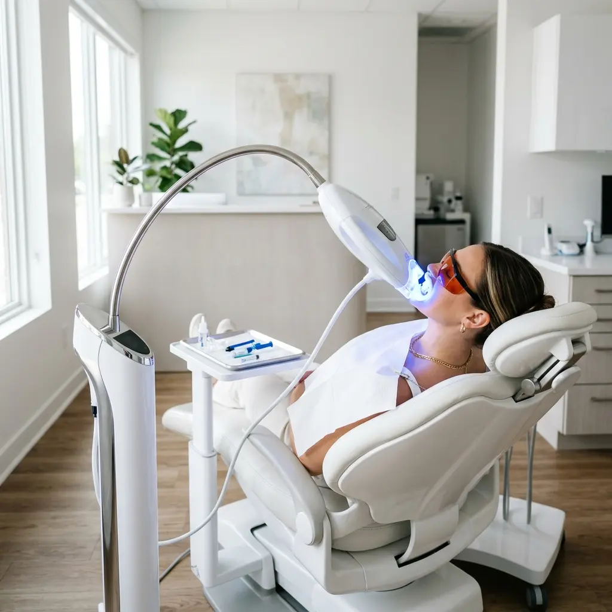
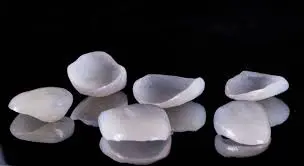
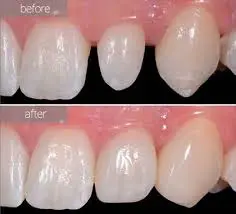

Επαγγελματική Λεύκανση Δοντιών
Άμεσα αποτελέσματα σε μία μόνο συνεδρία 90 λεπτών. Ανώδυνα, γρήγορα και με εντυπωσιακά αισθητικά αποτελέσματα χάρη στην τεχνολογία Blue Spectrum LED.
Η Διαδικασία
Τρία εύκολα βήματα για ένα χαμόγελο που ακτινοβολεί, σε ένα σύγχρονο κι ευχάριστο περιβάλλον.
Αξιολόγηση & Προετοιμασία
Ο οδοντίατρός μας καταγράφει την τρέχουσα απόχρωση των δοντιών σας και σας δείχνει το αναμενόμενο αποτέλεσμα πριν ξεκινήσει οτιδήποτε. Στη συνέχεια, τα δόντια καθαρίζονται σχολαστικά με ένα ειδικό ενεργοποιητή για μέγιστη αποτελεσματικότητα.
Εφαρμογή Λεύκανσης LED
Εφαρμόζεται το εξειδικευμένο gel λεύκανσης και ενεργοποιείται με λάμπα Blue Spectrum LED — η πιο αποτελεσματική τεχνολογία για ασφαλή λεύκανση χωρίς υπερθέρμανση. Η διαδικασία ολοκληρώνεται σε 2-3 κύκλους των 20-30 λεπτών.
Αποτέλεσμα & Συστάσεις
Επιβεβαιώνουμε και καταγράφουμε τα αποτελέσματα, και σας δίνουμε εξατομικευμένες συμβουλές φροντίδας ώστε το χαμόγελό σας να παραμείνει λευκό όσο το δυνατόν περισσότερο.

Συμβουλές Μετά τη Λεύκανση
Μικρές αλλαγές στις καθημερινές συνήθειές σας μπορούν να διατηρήσουν τα αποτελέσματα για 18-24 μήνες.
Αποφύγετε το κάπνισμα
Εκτός από τα οφέλη για την υγεία, θα αποφύγετε τους κίτρινους και καφέ λεκέδες στα δόντια σας.
Λιγότερος καφές
Δεν χρειάζεται να κόψετε τον καφέ, αλλά μειώστε την κατανάλωση. Όσο περισσότερο γάλα βάζετε, τόσο λιγότεροι οι λεκέδες.
Λευκό αντί κόκκινο κρασί
Το κόκκινο κρασί προκαλεί σημαντική δυσχρωμία. Προτιμήστε λευκό για να προστατέψετε το αποτέλεσμα.
Κανονική οδοντόκρεμα
Αντίθετα με ό,τι πιστεύεται, οι λευκαντικές οδοντόκρεμες περιέχουν κόκκους που φθείρουν το σμάλτο. Χρησιμοποιήστε κανονική.
Καθημερινή ρουτίνα
Βούρτσισμα δύο φορές την ημέρα, οδοντικό νήμα και στοματικό διάλυμα — μια απλή ρουτίνα αρκεί για να διατηρήσετε τα αποτελέσματα.
Συχνές Ερωτήσεις
Όχι. Η τεχνολογία LED που χρησιμοποιούμε είναι εντελώς ανώδυνη. Ορισμένοι ασθενείς αναφέρουν ελαφρά ευαισθησία μετά τη συνεδρία, που υποχωρεί εντός 24-48 ωρών.
Με σωστή φροντίδα, τα αποτελέσματα διαρκούν 18 έως 24 μήνες. Οι συμβουλές μας μετά τη θεραπεία μπορούν να βοηθήσουν στη μεγιστοποίηση της διάρκειας.
Η λεύκανση ενδείκνυται για ενήλικες με υγιή δόντια και ούλα. Στη δωρεάν αρχική αξιολόγηση, ο οδοντίατρος θα εκτιμήσει αν η θεραπεία είναι κατάλληλη για εσάς.
Απολύτως. Η τεχνολογία Blue Spectrum LED ενεργοποιεί το gel λεύκανσης χωρίς υπερθέρμανση ή βλάβη στα δόντια. Είναι η πιο ασφαλής μέθοδος λεύκανσης που διατίθεται σήμερα.
Όψεις Πορσελάνης
Λεπτά, χειροποίητα κελύφη πορσελάνης που τοποθετούνται μόνιμα στην πρόσθια επιφάνεια των δοντιών — η απόλυτη λύση για ένα συμμετρικό, φυσικό και εντυπωσιακό χαμόγελο.
Τι είναι οι Όψεις;
Οι αισθητικές όψεις είναι εξαιρετικά λεπτά κελύφη πορσελάνης, κατασκευασμένα στο χέρι από εξειδικευμένους κεραμιστές. Τοποθετούνται μόνιμα στην πρόσθια πλευρά των δοντιών και μπορούν να διορθώσουν δυσχρωμίες, ατέλειες στο σχήμα, κενά μεταξύ δοντιών, ή φθαρμένα δόντια — χαρίζοντας ένα εντυπωσιακό αποτέλεσμα.

Η Διαδικασία
Η τοποθέτηση όψεων ολοκληρώνεται σε δύο ραντεβού μέσα σε περίπου 10 ημέρες.
1ο Ραντεβού — Σχεδιασμός
Δημιουργούμε ένα διαγνωστικό μοντέλο (wax-up) για να καθορίσουμε τις ιδανικές διαστάσεις των όψεων σε αρμονία με τα χαρακτηριστικά του προσώπου σας. Λαμβάνουμε αποτυπώματα και ψηφιακές φωτογραφίες.
2ο Ραντεβού — Trial Fit
Τοποθετούμε προσωρινές όψεις (mock-up) για να αξιολογήσουμε το σχήμα, τη λειτουργικότητα και την αισθητική πριν την τελική κατασκευή. Με αυτόν τον τρόπο έχετε μια ακριβή πρόγευση του τελικού αποτελέσματος.
3ο Ραντεβού — Τοποθέτηση
Στο τρίτο ραντεβού, γίνεται η τελική τοποθέτηση των μόνιμων κεραμικών όψεων, αφού επιβεβαιώσουμε ότι όλα είναι τέλεια.
Πλεονεκτήματα
- Φυσικό αποτέλεσμα που διαρκεί χρόνια
- Τοποθέτηση σε τρία ραντεβού
- Ανθεκτικότητα στους λεκέδες
- Ελάχιστη ή καθόλου παρέμβαση στο δόντι
- Διόρθωση σχήματος, μεγέθους και χρώματος
Αποτελέσματα που Εμπνέουν
Δείτε τη μεταμόρφωση ενός χαμόγελου με τη χρήση χειροποίητων όψεων πορσελάνης.

Συχνές Ερωτήσεις
Όχι, εφόσον η τοποθέτηση γίνεται σωστά. Σε ιδανικές περιπτώσεις, τα δόντια δεν χρειάζονται καθόλου τροχισμό — οι όψεις τοποθετούνται απλώς πάνω στη φυσική επιφάνεια. Σήμερα, μπορούν να κατασκευαστούν σε πάχος μόλις 0,3-0,5 χιλιοστά.
Ναι, μπορείτε να τρώτε κανονικά. Συνιστούμε απλώς να αποφεύγετε να δαγκώνετε σκληρά τρόφιμα άμεσα (π.χ. μήλα, σοκολάτα). Με τη σωστή φροντίδα και έναν έμπειρο οδοντίατρο, οι όψεις αντέχουν πολλά χρόνια.
Οι κεραμικές/πορσελάνινες όψεις δεν μπορούν να λευκανθούν, γι' αυτό επιλέγετε από την αρχή την απόχρωση που σας αρέσει. Η λεία, γυαλιστερή επιφάνεια τους τις κάνει ανθεκτικές στους λεκέδες.
Υπάρχουν δύο κύριοι τύποι: eMax (πιο ανθεκτικές, λιγότερο πιθανό να σπάσουν) και Empress (πιο φυσική εμφάνιση). Ο οδοντίατρός μας θα σας συμβουλεύσει ποιος τύπος ταιριάζει καλύτερα στην περίπτωσή σας.
Το κόστος εξαρτάται από τον αριθμό των δοντιών και τον τύπο κεραμικής. Η αρχική διαγνωστική πρόσοψη (mock-up) καλύπτεται από το ιατρείο χωρίς επιπλέον χρέωση.